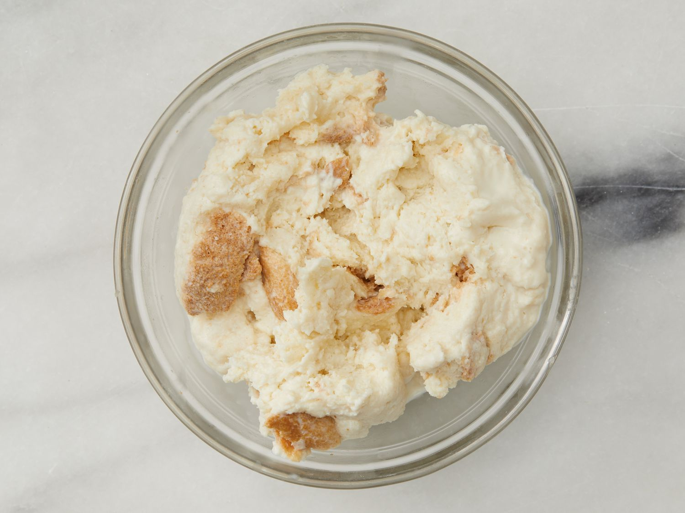

This Swedish meatball recipe is our family's Christmas tradition. We frequently double the recipe and keep it warm in a slow cooker. Worth the effort, and the meatballs are even better the next day! Reserve brown gravy and add sour cream to it the day you serve the leftovers.
Preheat the oven to 350 degrees F (175 degrees C).
Place bread crumbs into a small bowl; mix in cream. Allow to stand until crumbs absorb cream, about 10 minutes.
Meanwhile, melt 1 teaspoon butter in a skillet over medium heat; cook and stir onion until light brown, about 10 minutes. Transfer onion to a mixing bowl.

Mix ground beef, ground pork, egg, brown sugar, salt, black pepper, nutmeg, allspice, and ginger with onion in the mixing bowl. Lightly mix in bread crumbs and cream.

Melt 1 tablespoon butter in a large skillet over medium heat. Pinch off about 1 1/2 tablespoon meat mixture per meatball; form into balls. Place meatballs into the skillet and cook, turning often, until browned, about 5 minutes. Insides of meatballs will still be pink.

Place browned meatballs into a baking dish, pour in chicken broth, and cover with foil.
Bake in the preheated oven until meatballs are tender, about 40 minutes. Remove meatballs to a serving dish.

Pour pan drippings into a saucepan over medium heat. Whisk flour into drippings until smooth.

Gradually whisk in enough beef broth to total about 2 1/2 cups liquid.

Bring gravy to a simmer, whisking constantly, until thickened, about 5 minutes.

Just before serving, whisk in sour cream. Season with salt and black pepper. Serve gravy with meatballs.